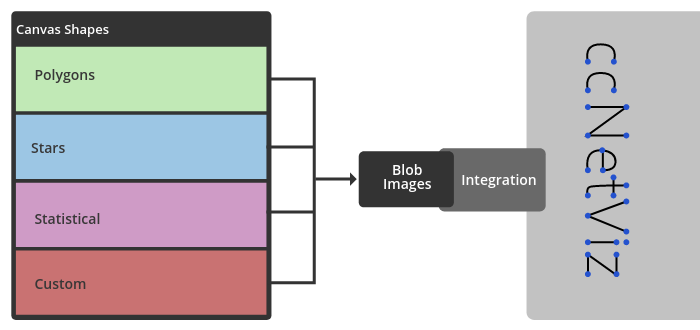

This page is a summary of my adventure through the Google Summer of Code.
Graphs allow the visualization of related data, the graph loses its meaning partially when the number of nodes increases. With this plugin, I aimed to present a more meaningful graph to the user by grouping the nodes.
I’ve even added a different graphical representation method (Pie chart, Radial histogram, etc.) in an existing graph, and I’ve created a plugin that can have even more detailed statistical node images.
Basically, a structure was created that could work separately from the whole library and allow the user to add their own shapes in addition to the predefined shapes.

Users can create own shapes via this example.
Various linear animation structures were created by creating multiple shapes per second.
Color animation
Stroke animation
I have prepared a continuous integration test for the continuity of the features. I used SlimerJS because it was able to draw graphs headless with Mozilla Firefox.
Basically, this plugin allows you to use Cytoscape.js layouts to your ccNetViz library.
He has a good knowledge of Javascript and he is a great mentor!